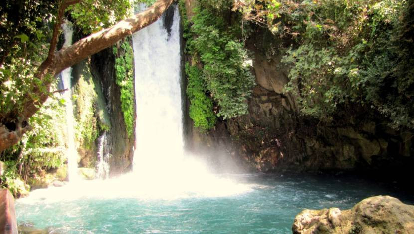

ישראל צפון - חוויה אחרת של טיול
טיולים וסיורים מודרכים לכל גיל

צילום: מערכת אתר טיולי
אין כמו טיול לצפון היפה שלנו בכל הזדמנות. תמיד יש לו מה להציע לנו- לכל גיל, ובכל עונות השנה.
אז לפני שאתם אורזים שוב תיק עם פק"ל קפה כדי ללגום שוב מטובה של הארץ הזאת,
מוזמנים ליצור איתנו קשר לטיול ברמה אחרת...
חצי דקה של טעימה מהצפון שלנו
כמה טיפים לפני שיוצאים לדרך:
- היו ממוקדים והכינו לעצמכם רשימה מראש לאלו מקומות תרצו להגיע, ומתי.
ככה לא תבזבזו זמן מיותר בדיונים לאן לנסוע עכשיו, ולא תיזכרו לקראת השקיעה בכינרת שהייתם רוצים בכלל להגיע היום גם לחרמון
- חישבו על טווח הגילאים במשפחה או על כלל תחומי העניין של החברים שלכם לטיול.
חשוב שכולם יהנו והאוירה תישמר רגועה וכיפית
- תהיו מציאותיים.
נכון שהייתם רוצים להספיק הכל, אבל טיול שנראה כמו מירוץ הספקים בדרך כלל ישאיר אתכם רק עם טעם חמוץ והרגשה שבסוף לא נהנהתם משום דבר.
אז בואו נתחיל...
לחצו כאן לגלרית המומלצים שלנו
לחצו כאן להשארת פרטים
אנו נחזור אליכם עם ההצעות שמתאימות בדיוק לכם, ועם כל הפרטים